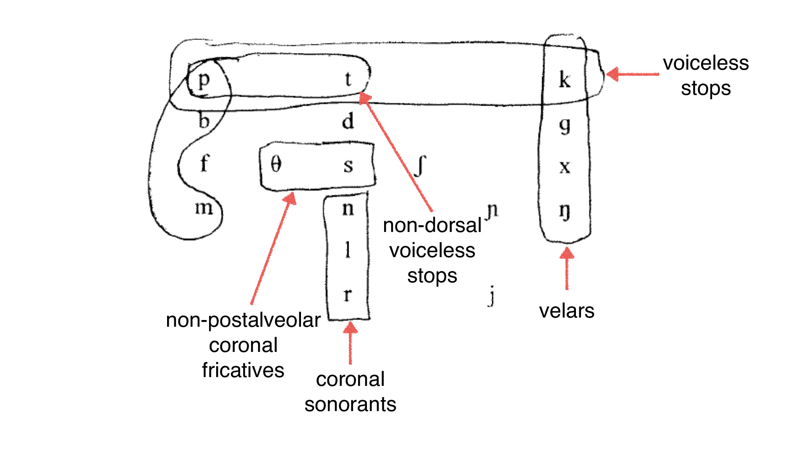
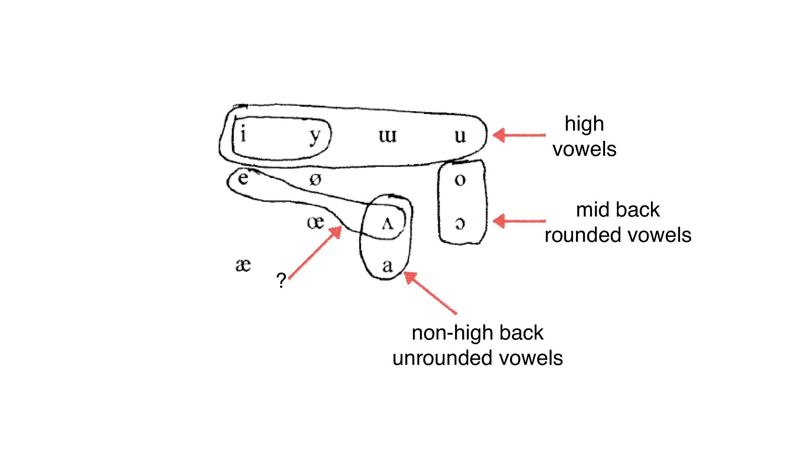

### Homework 1 is due Friday Submit online under 'Quizzes'-> Homework 1 Online Submission by Midnight, or in class on paper. Will's Wednesday office hours are cancelled 1/23 and 1/30. Alternate times will be announced. --- # How to be Naturally Classy ### Will Styler - LIGN 111 --- ### Last week, we looked at English Plurals and Past Tense - We found that some words patterned with one affix - Some used a different one - The final sound seemed to be causing this to happen --- ### Plural Patterns in our data - [z] for /j g d ɹ n w b m l i aj v u oʊ/ - [s] for /t p k f θ/ - [ɪz] for /tʃ dʒ s ʃ z/ --- ### A few reasons why listing sounds is no good - Lists are *inefficient* - Lists treat these phenomena as *unmotivated* - Lists *disguise relationships* among sounds - Lists aren't *graceful* --- ### Relationships among speech sounds are real - Phonology is not just algebra with symbols - Your IPA chart is not just an arbitrary scattering of sounds - Phonetic motivation for changes is often based on geography --- ### Relationships can be described in many ways - ... but the easiest way to start thinking is in terms of... --- # Natural Classes! --- ### Let's play a game!  --- ### One of these sounds is not like the other... ## /t/ /k/ /p/ /s/ - /s/ is the only fricative, all the rest are voiceless stops --- ## /m/ /n/ /ŋ/ /b/ - /b/ is the only oral sound, all the rest are nasal sounds --- ## /b/ /a/ /ŋ/ /i/ /s/ - /s/ is the only voiceless sound, all the rest are voiced sounds - /n/ is the only nasal sound, all the rest are oral --- ## /l/ /s/ /ŋ/ /j/ /i/ - /i/ is the only vowel, all the rest are consonants --- ## /i/ /ɪ/ /ɛ/ /æ/ /ɔ/ - /ɔ/ is the only back vowel, all the rest are front vowels --- ## /t/ /n/ /s/ /z/ /k/ - /k/ is the only non-alveolar sound --- ## /p/ /t/ /k/ /b/ - /b/ is the only voiced stop --- ## Natural Class A set of speech sounds in a given language that is able to be uniquely, completely, and succinctly described in terms of the shared phonetic (“natural”) properties of its members. ---  --- ### Natural Class Examples - Voiceless stops (English & Spanish): [p, t, k] - Voiced fricatives (English): [v, ð, z, ʒ] - Voiced fricatives (Spanish): [β, ð, ɣ] - Front vowels (English): [iː, ɪ, eɪ, ɛ, æ] - Front vowels (Spanish): [i, e] --- ### Natural Classes need to be properly scoped - [p t k] are described by many natural classes - Phones, Consonants, Voiceless Sounds, Obstruents, Stops, Voiceless stops - A rule that applies to [p t k] might not apply to all consonants or stops --- ### Your Natural Class Descriptions should describe... - **All** the sounds it's intended to describe - **Only** the sounds it's intended to describe - These two things make them **technically correct** --- ### You've got a rule - [uː, ʊ, oʊ, ɔː] are changing into something else - Vowels? - Back vowels? - Rounded Vowels? - Rounded Vowels is the technically correct class --- ### Be correct, but also be succinct! - Your natural class description should only include necessary properties - [p t k] in English are 'voiceless stops' - We don't need "Voiceless Stop Consonants" --- ### Keep the language in mind! - Natural class correctness depends on the language you're working in - In English, [p t k] are the voiceless stops - In Bari, [p t ɟ k] are the voiceless stops - It would be incorrect to talk about [p t k] using 'voiceless stops' as a class --- ### Often, natural classes are based on IPA-like descriptions - "Stop Consonants" - "High Vowels" --- ### There are other Non-IPA terms you'll hear too - "Liquids" describes [l] [ɹ] in English - "Sibilants" describes [s] [z] [ʃ] [tʃ] [dʒ] [ʒ] - "Sonorant" describes Nasals, Approximants, Vowels, Taps, Trills - "Obstruent" describes Stops, Affricates, Fricatives - These sounds share characteristics which aren't a single place/manner/voicing type --- ### Let's look at some English Natural Classes - (With thanks to Eric Bakovic for these great slides) --- --- --- --- <img class="wide" src="phonology/natcls_eng-dorsals.jpg"> --- <img class="wide" src="phonology/natcls_eng-fricatives.jpg"> --- --- --- --- <img class="wide" src="phonology/natcls_eng-vfricatives.jpg"> --- <img class="wide" src="phonology/natcls_eng-velarstops.jpg"> --- --- --- --- --- <img class="wide" src="phonology/natcls_eng-backvowels.jpg"> --- <img class="wide" src="phonology/natcls_eng-highvowels.jpg"> --- --- <img class="wide" src="phonology/natcls_eng-nolowbackunround.jpg"> --- --- --- <img class="wide" src="ling_memes/naturalclass.jpg"> --- ### Phonological Rules *typically* involve natural classes - Natural classes can be the 'targets' of rules - [p t k] are aspirated in English - Natural classes can 'trigger' rules - [tʃ dʒ s ʃ z] trigger the [ɪz] plural - Very often, rules will act on groups of sounds which share features --- ### Unnatural Classes should provoke caution - Rules seldom depend on weird groupings - If your analysis starts with "This alternation is triggered by one of [p d h i w n]...", be careful. - If you cannot reframe your analysis in terms of natural classes, think twice. - It's not impossible, though. - Often due to unbalanced phonemic inventories! --- ### Lakota - Indigenous lg. of the Great Plains, Siouan, ~2,100 speakers - [p] becomes [b] before sonorants - [k] becomes [g] before sonorants - [t] never occurs before sonorants - (Turns out this is why Lakota is Lakota, not Dakota or Nakota!) --- ### Let's Practice a bit more! --- --- <img class="wide" src="phonology/natcls_guessing_2.jpg"> --- --- <img class="wide" src="phonology/natcls_guessing_4.jpg"> --- <img class="wide" src="phonology/natcls_guessing_5.jpg"> --- --- --- <img class="wide" src="phonology/natcls_guessing_8.jpg"> --- ---  --- --- <img class="wide" src="phonology/natcls_guessing_12.jpg"> --- --- <img class="wide" src="phonology/natcls_guessing_14.jpg"> --- --- --- --- <img class="wide" src="phonology/natcls_guessing_18.jpg"> ---  --- <img class="wide" src="phonology/natcls_guessing_20.jpg"> --- <img class="wide" src="phonology/natcls_guessing_21.jpg"> --- --- ### Natural classes are a first step - They let us move beyond lists - They let us write single rules, rather than sets of rules - They start us on the road to features --- ### For Next Time - We'll start to play with some alternations! --- <huge>Thank you!</huge>